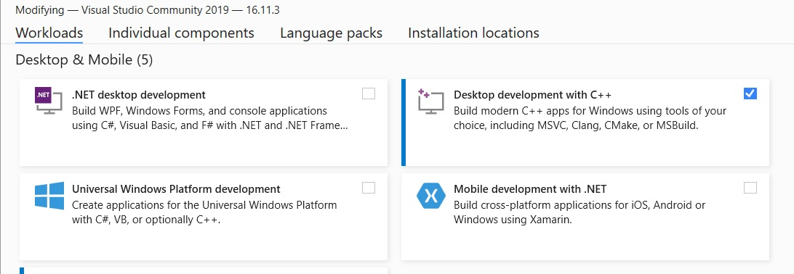

2021 Sept - Please note: the following guide is intended for Windows 10 computers and laptops.
To write, build, and debug C projects efficiently, I recommend using Microsoft's Visual Studio 2019. You can find this on their official website at: https://visualstudio.microsoft.com/vs/
After downloading the installer (.exe), run it.
Next, check the box next to Desktop development with C++ and install.
Desktop development with C++ and install">Create a source code file called "helloworld.c" and type the following into your source code:
#include
int main(){ //this is where your code will start executing from
printf("Hello, world!"); //display "Hello, world!" on output screen, end your statement with a semi-colon ';'
return 0; //tells the computer your code ran successfully
} //close the bracket
Now, open terminal or Developer, and type
cl helloworld.c
This will compile your C code. Now you'll want to run, or execute your code to actually see what it does. Type into the terminal:
helloworld
You should see a screen pop up, with "Hello, world!" printed on it.
Congratulations! You've completed your first C program.